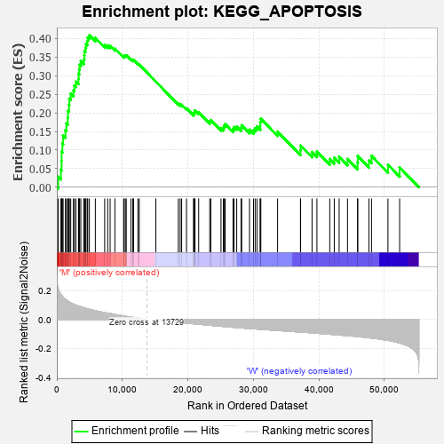
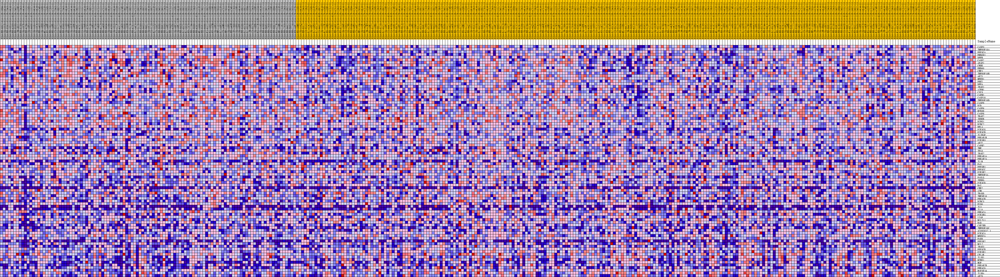
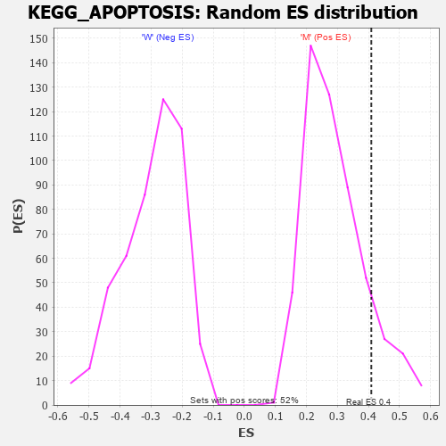

| Dataset | MUC16.MUC16.cls#M_versus_W.MUC16.cls#M_versus_W_repos |
| Phenotype | MUC16.cls#M_versus_W_repos |
| Upregulated in class | M |
| GeneSet | KEGG_APOPTOSIS |
| Enrichment Score (ES) | 0.40893278 |
| Normalized Enrichment Score (NES) | 1.4014055 |
| Nominal p-value | 0.12934363 |
| FDR q-value | 0.26203224 |
| FWER p-Value | 0.872 |

| PROBE | DESCRIPTION (from dataset) | GENE SYMBOL | GENE_TITLE | RANK IN GENE LIST | RANK METRIC SCORE | RUNNING ES | CORE ENRICHMENT | |
|---|---|---|---|---|---|---|---|---|
| 1 | CASP3 | na | 207 | 0.209 | 0.0282 | Yes | ||
| 2 | TNFRSF10A | na | 628 | 0.171 | 0.0468 | Yes | ||
| 3 | PPP3CA | na | 722 | 0.165 | 0.0705 | Yes | ||
| 4 | ENDOD1 | na | 730 | 0.165 | 0.0956 | Yes | ||
| 5 | DFFB | na | 853 | 0.158 | 0.1175 | Yes | ||
| 6 | CASP7 | na | 962 | 0.152 | 0.1388 | Yes | ||
| 7 | APAF1 | na | 1310 | 0.138 | 0.1536 | Yes | ||
| 8 | CHUK | na | 1459 | 0.132 | 0.1712 | Yes | ||
| 9 | ENDOG | na | 1671 | 0.126 | 0.1867 | Yes | ||
| 10 | CHP1 | na | 1690 | 0.126 | 0.2056 | Yes | ||
| 11 | TNFRSF10B | na | 1857 | 0.120 | 0.2210 | Yes | ||
| 12 | AKT1 | na | 1908 | 0.119 | 0.2383 | Yes | ||
| 13 | NFKB1 | na | 2122 | 0.114 | 0.2519 | Yes | ||
| 14 | PRKX | na | 2534 | 0.105 | 0.2605 | Yes | ||
| 15 | DFFA | na | 2678 | 0.102 | 0.2735 | Yes | ||
| 16 | IRAK1 | na | 2909 | 0.098 | 0.2843 | Yes | ||
| 17 | AIFM1 | na | 3301 | 0.092 | 0.2913 | Yes | ||
| 18 | CYCS | na | 3335 | 0.091 | 0.3047 | Yes | ||
| 19 | CAPN1 | na | 3414 | 0.090 | 0.3171 | Yes | ||
| 20 | CASP10 | na | 3473 | 0.089 | 0.3297 | Yes | ||
| 21 | TNFRSF10D | na | 3662 | 0.086 | 0.3395 | Yes | ||
| 22 | CASP9 | na | 4119 | 0.080 | 0.3436 | Yes | ||
| 23 | BID | na | 4195 | 0.079 | 0.3544 | Yes | ||
| 24 | CASP6 | na | 4224 | 0.079 | 0.3660 | Yes | ||
| 25 | MYD88 | na | 4371 | 0.077 | 0.3751 | Yes | ||
| 26 | CASP8 | na | 4446 | 0.076 | 0.3854 | Yes | ||
| 27 | TRAF2 | na | 4652 | 0.073 | 0.3929 | Yes | ||
| 28 | IKBKB | na | 4722 | 0.072 | 0.4028 | Yes | ||
| 29 | RIPK1 | na | 4970 | 0.070 | 0.4089 | Yes | ||
| 30 | BIRC2 | na | 5880 | 0.060 | 0.4017 | No | ||
| 31 | RELA | na | 7305 | 0.047 | 0.3830 | No | ||
| 32 | PIK3CG | na | 7764 | 0.043 | 0.3813 | No | ||
| 33 | PIK3CB | na | 8139 | 0.040 | 0.3807 | No | ||
| 34 | IL1RAP | na | 8863 | 0.034 | 0.3728 | No | ||
| 35 | PRKAR1B | na | 10195 | 0.023 | 0.3522 | No | ||
| 36 | PIK3R3 | na | 10272 | 0.023 | 0.3543 | No | ||
| 37 | AKT2 | na | 10469 | 0.021 | 0.3540 | No | ||
| 38 | CAPN2 | na | 10603 | 0.020 | 0.3547 | No | ||
| 39 | TNF | na | 11311 | 0.015 | 0.3443 | No | ||
| 40 | TP53 | na | 11609 | 0.014 | 0.3410 | No | ||
| 41 | IRAK2 | na | 11638 | 0.013 | 0.3425 | No | ||
| 42 | PRKAR1A | na | 11728 | 0.013 | 0.3428 | No | ||
| 43 | PRKAR2A | na | 12381 | 0.008 | 0.3323 | No | ||
| 44 | IL1B | na | 12583 | 0.007 | 0.3298 | No | ||
| 45 | FAS | na | 15119 | -0.001 | 0.2839 | No | ||
| 46 | PPP3R1 | na | 18549 | -0.018 | 0.2246 | No | ||
| 47 | PPP3CC | na | 18833 | -0.020 | 0.2225 | No | ||
| 48 | PIK3R2 | na | 19058 | -0.021 | 0.2216 | No | ||
| 49 | TNFRSF1A | na | 19800 | -0.024 | 0.2119 | No | ||
| 50 | FASLG | na | 20865 | -0.029 | 0.1970 | No | ||
| 51 | IKBKG | na | 20948 | -0.029 | 0.2001 | No | ||
| 52 | PIK3CD | na | 21039 | -0.030 | 0.2030 | No | ||
| 53 | BAX | na | 21097 | -0.030 | 0.2066 | No | ||
| 54 | CHP2 | na | 21658 | -0.033 | 0.2014 | No | ||
| 55 | ATM | na | 23346 | -0.040 | 0.1769 | No | ||
| 56 | TRADD | na | 23516 | -0.040 | 0.1800 | No | ||
| 57 | TNFSF10 | na | 25070 | -0.046 | 0.1590 | No | ||
| 58 | PRKACB | na | 25430 | -0.048 | 0.1598 | No | ||
| 59 | BIRC3 | na | 25531 | -0.048 | 0.1654 | No | ||
| 60 | EXOG | na | 25694 | -0.049 | 0.1699 | No | ||
| 61 | IL3 | na | 26900 | -0.053 | 0.1562 | No | ||
| 62 | IL1A | na | 27051 | -0.054 | 0.1618 | No | ||
| 63 | PRKACA | na | 27466 | -0.055 | 0.1627 | No | ||
| 64 | PIK3R5 | na | 28119 | -0.058 | 0.1597 | No | ||
| 65 | XIAP | na | 28225 | -0.058 | 0.1667 | No | ||
| 66 | BCL2L1 | na | 29417 | -0.062 | 0.1547 | No | ||
| 67 | BAD | na | 30032 | -0.064 | 0.1533 | No | ||
| 68 | CSF2RB | na | 30281 | -0.065 | 0.1588 | No | ||
| 69 | TNFRSF10C | na | 30555 | -0.066 | 0.1639 | No | ||
| 70 | AC093012.1 | na | 31060 | -0.067 | 0.1650 | No | ||
| 71 | PIK3CA | na | 31062 | -0.067 | 0.1753 | No | ||
| 72 | NFKBIA | na | 31149 | -0.067 | 0.1841 | No | ||
| 73 | FADD | na | 33705 | -0.076 | 0.1494 | No | ||
| 74 | PPP3R2 | na | 37199 | -0.086 | 0.0993 | No | ||
| 75 | BCL2 | na | 37223 | -0.086 | 0.1121 | No | ||
| 76 | IRAK3 | na | 38968 | -0.092 | 0.0946 | No | ||
| 77 | PPP3CB | na | 39713 | -0.095 | 0.0956 | No | ||
| 78 | PIK3R1 | na | 41671 | -0.101 | 0.0757 | No | ||
| 79 | CFLAR | na | 42361 | -0.104 | 0.0791 | No | ||
| 80 | IL1R1 | na | 43107 | -0.106 | 0.0819 | No | ||
| 81 | NTRK1 | na | 44381 | -0.111 | 0.0758 | No | ||
| 82 | NGF | na | 45919 | -0.117 | 0.0659 | No | ||
| 83 | PRKAR2B | na | 45954 | -0.117 | 0.0833 | No | ||
| 84 | PRKACG | na | 47650 | -0.126 | 0.0718 | No | ||
| 85 | MAP3K14 | na | 48051 | -0.128 | 0.0841 | No | ||
| 86 | IL3RA | na | 50557 | -0.144 | 0.0607 | No | ||
| 87 | AKT3 | na | 52341 | -0.161 | 0.0530 | No |

